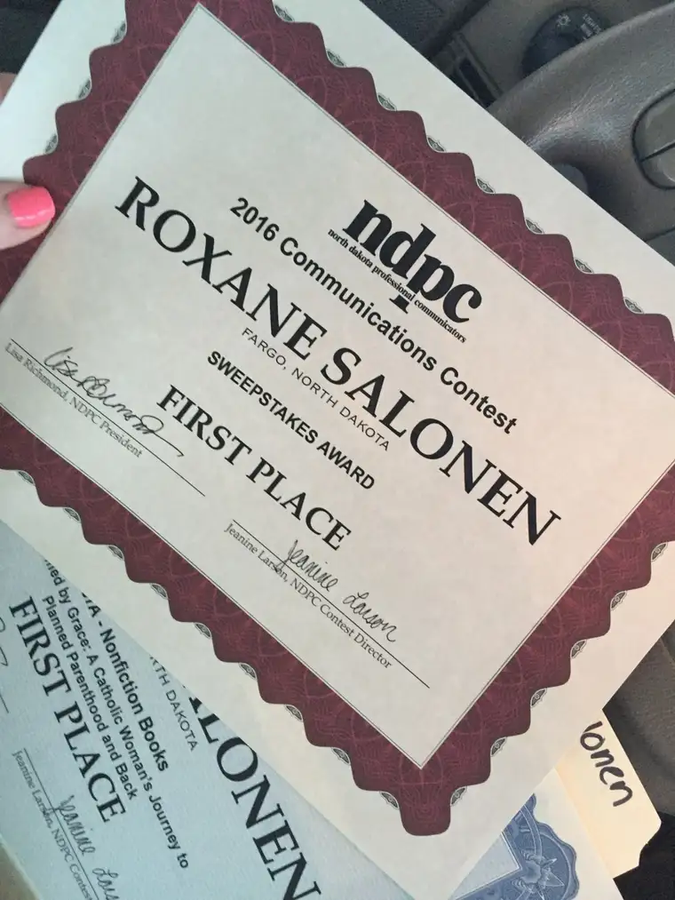
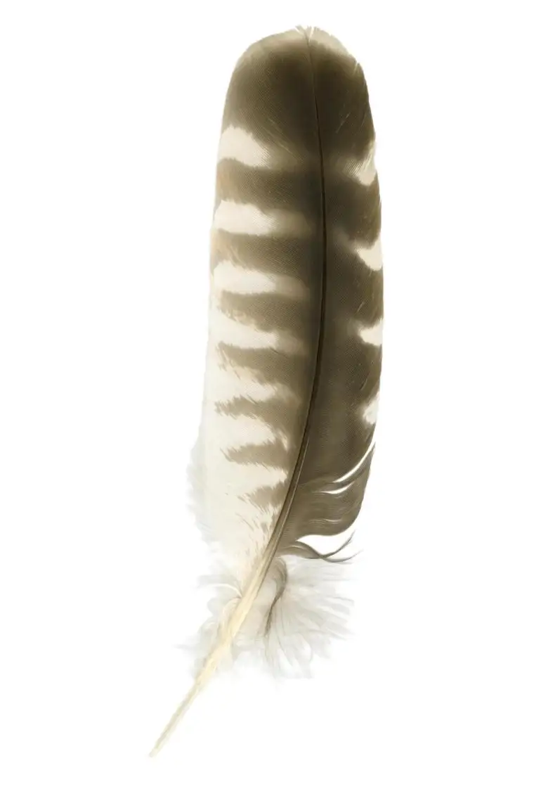

I’m still catching up with myself from an intense last couple weeks, which included college tours with my daughter and a final decision for her future which was a Very Big Deal.
On the way to one of those visits, we stopped in Minot for an awards banquet hosted by the North Dakota Professional Communicators. I’d received an email that I won something in the annual communications contest, so decided it was worth a stop-in.
We arrived at the hotel just in time to sit down with the rest of the conference attendees and award-winners and begin munching on our salads. After a delicious meal, the awards were announced.
It was a good night for me. Winning entries are combined and tabulated, and those individuals with the most wins are named sweepstakes winners. My efforts and the judges’ analyses landed me first-place in the sweepstakes count.

I was happy to see that some of my “babies” had done well in the state competition, and would be moving on to nationals. But one award in particular seemed especially sweet.
 It wasn’t the usual news story or column, but a project that had required so much of me, for a good several years. The book I wrote on the experience of the woman who has since become a good friend, Ramona Trevino, and her exit from Planned Parenthood — “Redeemed by Grace,” — had earned some nice praise from the judge who scrutinized it.
It wasn’t the usual news story or column, but a project that had required so much of me, for a good several years. The book I wrote on the experience of the woman who has since become a good friend, Ramona Trevino, and her exit from Planned Parenthood — “Redeemed by Grace,” — had earned some nice praise from the judge who scrutinized it.
Every bit as edifying as the award itself, however, were the comments that came attached:
“This was a fabulous read. The storyline is well organized and well paced. A bit of narrative, then a bit of spiritual commentary, then more narrative. The story itself is compelling and keeps the reader involved. There is even a bit of suspense from time to time. With one exception, the mechanics of the writing are so professional that there are practically no glitches to interfere with reading the story.”
Nice! But wait now, what about this exception? “That exception,” the judge explains, “has to do with periods, commas and quotation marks. While the British (I’ve read) place these elements where they make sense, we Americans follow the rule that ALL periods and commas go inside final quotation marks, ALWAYS. To find that rule broken on practically every page does make me wince a bit.”
I couldn’t agree with the judge more regarding punctuation style. In fact, it bothered me, too. But I am grateful to say that this “one exception” was not on me; it was the publisher’s decision and style, and I had to defer to them on the matter.
Now, it will find its way, with the other firsts, to the National Federation of Press Women. I like that another person in some other state will have a chance to read Ramona’s story now. I can only see that as a good thing.

Though professional feedback is invaluable, it’s also very nice to hear from readers moved by the stories I’ve helped shape and relay. So my thanks goes most of all to those who have taken the time to appreciate, and comment on, the outpouring of words that takes place my desk week after week. Despite the occasional complaint, the writing life is a truly blessed vocation. Word by word, writers write, readers read, and the circle becomes life-giving.Q4U: What feathers have been placed in your cap recently?